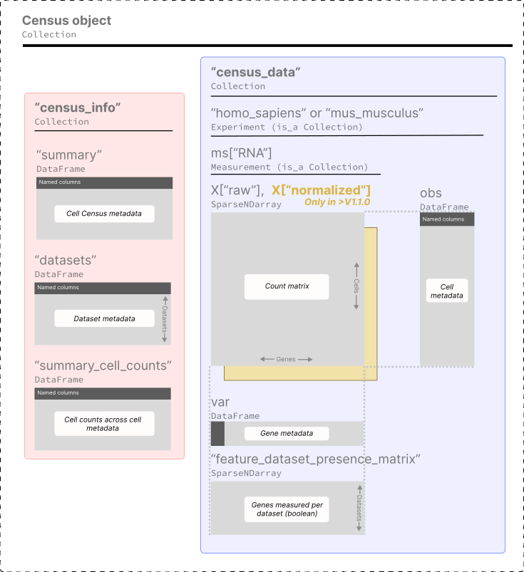

Census data and schema¶
This page provides a user-friendly overview of the Census contents and its schema, in case you are interested you can find the full schema specification here.
Contents:
Schema¶
The Census is a collection of a variety of SOMA objects organized with the following hierarchy.

As you can see the Census data is a SOMACollection with two high-level items:
"census_info"for the census summary info."census_data"for the single-cell data and metadata.
Census summary info "census_info"¶
A SOMAcollection with tables providing information of the census as a whole, it has the following items:
"summary": high-level information of this Census, e.g. build date, total cell count, etc."datasets": A table with all datasets from CELLxGENE Discover used to create the Census."summary_cell_counts": Cell counts stratified by relevant cell metadata.
Census single-cell data "census_data"¶
Data for each organism is stored in independent SOMAExperiment objects which are a specialized form of a SOMACollection. Each of these store a data matrix (cell by genes), cell metadata, gene metadata, and feature presence matrix:
This is how the data is organized for one organism – Homo sapiens:
["homo_sapiens"].obs: Cell metadata.["homo_sapiens"].ms["RNA"].X: Data matrices: raw counts inX["raw"], and library-size normalized counts inX["normalized"](only avialble in Census schema V1.1.0 and above).["homo_sapiens"].ms["RNA"].var: Gene Metadata.["homo_sapiens"].ms["RNA"]["feature_dataset_presence_matrix"]: a sparse boolean array indicating which genes were measured in each dataset.
Data included in the Census¶
All data from CZ CELLxGENE Discover that adheres to the following criteria is included in the Census:
Cells from human or mouse.
Non-spatial RNA data, see full list of sequencing technologies included here.
Raw counts.
Only standardized cell and gene metadata as described in the CELLxGENE Discover dataset schema.
⚠️ Note that the data includes:
Full-gene sequencing read counts (e.g. Smart-Seq2) and molecule counts (e.g. 10X).
Duplicate cells present across multiple datasets, these can be filtered in or out using the cell metadata variable
is_primary_data.
SOMA objects¶
You can find the full SOMA specification here.
The following is short description of the main SOMA objects used by the Census:
DenseNDArrayis a dense, N-dimensional array, with offset (zero-based) integer indexing on each dimension.SparseNDArrayis the same asDenseNDArraybut sparse, and supports point indexing (disjoint index access).DataFrameis a multi-column table with a user-defined columns names and value types, with support for point indexing.Collectionis a persistent container of named SOMA objects.Experimentis a class that represents a single-cell experiment. It always contains two objects:obs: aDataFramewith primary annotations on the observation axis.ms: aCollectionof measurements, each composed ofXmatrices and axis annotation matrices or data frames (e.g.var,varm,obsm, etc).